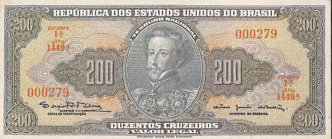
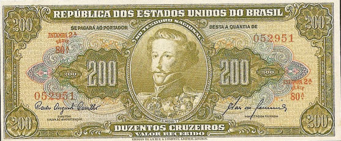

200 Cruzeiros
Dom Pedro I
Primeira Estampa - ABN
| Num |
Autógrafos e Chancelas |
Data |
Séries |
Tipo |
| C037 |
Autografada | 1943 | 001/320 | Valor Recebido |
| C038 |
Claudionor de Souza Lemos / Eugênio Gudin | 1955 | 321/520 | Valor Recebido |
| C039 |
Claudionor de Souza Lemos / Lucas Lopes | 1958 | 521/620 | Valor Recebido |
| C040 |
Affonso Almiro / Lucas Lopes | 1959 | 621/670 | Valor Recebido |
| C041 |
Carlos Augusto Carrilho / Clemente Mariani | 1961 | 671/1070 | Valor Legal |
| C042 |
Reginaldo Fernandes Nunes / Otávio G. de Bulhões | 1964 | 1071/1370 | Valor Legal |
| C043 |
Sérgio Augusto Ribeiro / Otávio G. de Bulhões | 1964 | 1371/1570 | Valor Legal |

Estampa:Anverso: Dom Pedro I
Reverso: Grito do Ipiranga
Cores:Anverso: Azul e policromia
Reverso: Verde oliva
Dimensões Básicas: 157mmx67mm
Segunda Estampa - TLR
| Num |
Autógrafos e Chancelas |
Data |
Séries |
Tipo |
| C097 |
Autografada | 1949 | 001/030 | Valor Recebido |
| C098 |
Carlos Augusto Carrilho / Sebastião P. de Almeida | 1960 | 031/110 | Valor Recebido |

Estampa:Anverso: Dom Pedro I
Reverso: Grito do Ipiranga
Cores:Anverso: Verde claro
Reverso: Verde claro
Dimensões Básicas: 157mmx67mm
As imagens foram retiradas do livro "Cédulas Brasileiras de 1942 à 1991" e podem estar sobre copyright. Estão sendo aqui usadas como ferramenta de consulta.
Website desenvolvido em HTML 5, a linguagem do futuro! Feito em Adobe ™ Dreamweaver ® CS 5.5